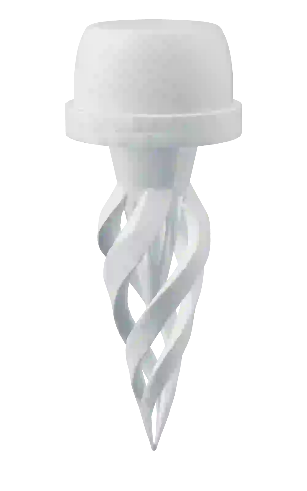
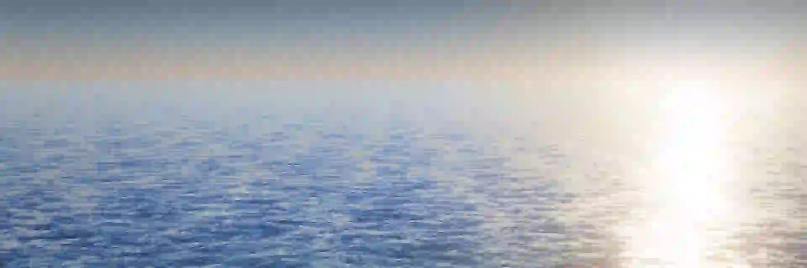

What it does
When oxygen drops, it acts.
It watches the water all night, and makes sure someone hears about it the moment oxygen falls.
How it reaches youHow it reaches you
- Minute 0Oxygen is falling: a text, an email and an alert on your dashboard.
- Minute 5It calls you.
- Minute 15It calls again.
- Minute 30Your farm manager gets the call.
- Below 4 mg/LIt stops warning and acts: your aerator turns on through your PLC.
Works on any farm.
Solar powered, nothing to wire. It reports over satellite, Wi-Fi or LTE.
The app
Everything on one screen.
Every reading from the float, on your phone, wherever you are.
Small float, eight sensors.
Capabilities
Solar powered · Satellite, Wi-Fi or LTE
Compact construction
About 200 mm in diameter
Onboard power
Solar panel & battery

Eight sensors
Oxygen | pH | Conductivity | Temperature | Turbidity | and more
Acts on its own
Switches on the aeration when oxygen falls
Registered design
Reg. No. 6535677

Want to try it on your farm?
Tell us about your ponds and the fish you raise. We'll come back to you within one working day.